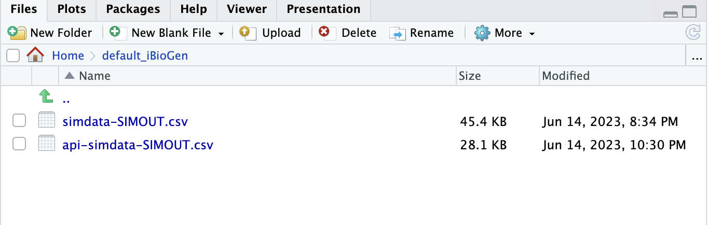
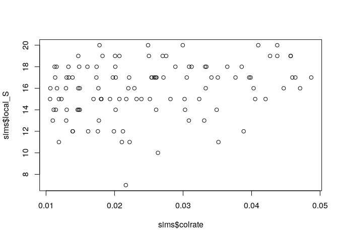
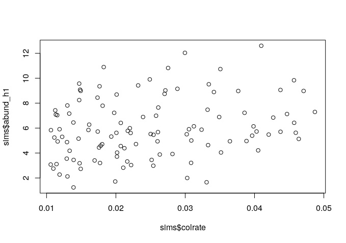
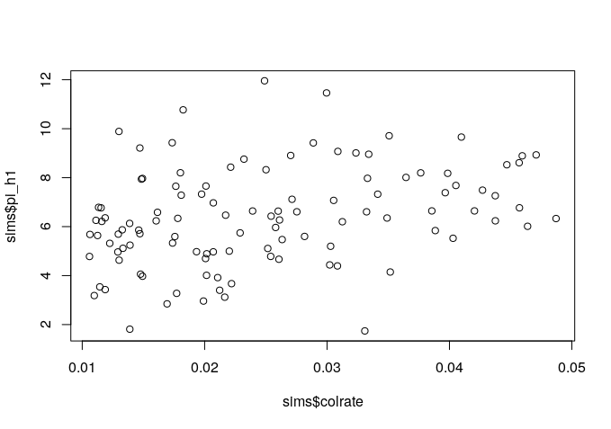
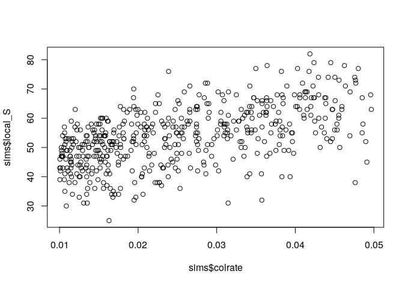
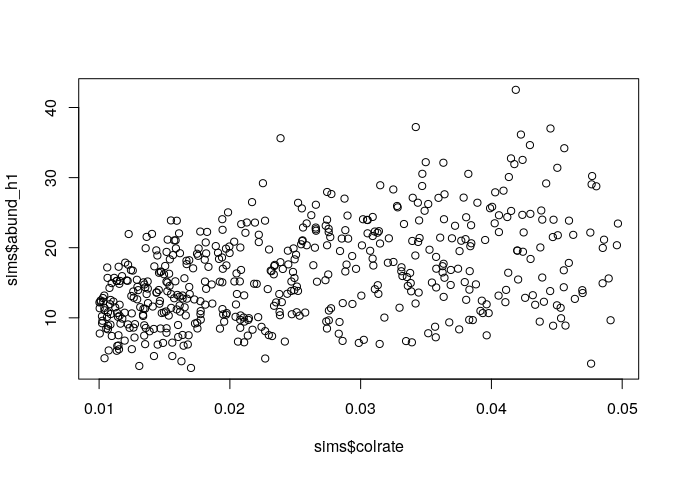
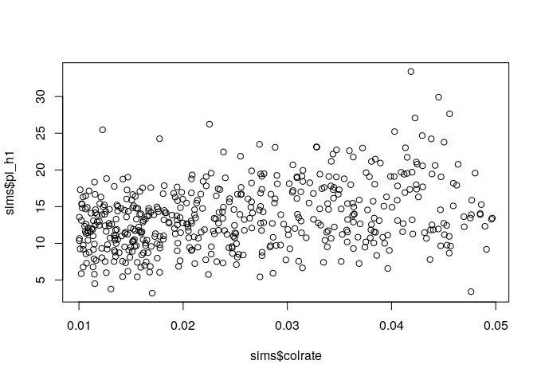

10 Using MESS API mode in RStudio to explore hypotheses
10.1 Key questions
- How do I run MESS from inside RStudio?
- How do I get simulation results in a format that is useful?
- How do I visualize simulation results to gain insight?
- How do I use MESS to explore/generate theoretical predictions?
10.2 Lesson objectives
After this lesson, learners should be able to…
- Run MESS simulations in R
- Summarize and plot simulation results
- Formulate hypotheses for how tweaking parameters will affect model outputs
- Use MESS to test these hypotheses in silico
- Synthesize the outcomes
10.3 Planned exercises
- Import MESS in R and run simulations in API mode
- Load, inspect, and plot simulation results
- Group brainstorming of params to tweak
- Breakout to test hypothesized model behavior given different parameter values
- Regroup to debrief/synthesize results
10.3.1 Import MESS in R and run simulations in API mode
The MESS CLI is a simple and powerful way to run simulations, but the iBioGen package also provies an API mode (in both R and python) which lets you dive under the hood of the CLI mode a bit. You have all the power of the CLI mode, yet more flexibility. In the source pane of RStudio open a new RScript and import the iBioGen package.
A little bookkeeping is first required in loading the reticulate library, which is a binding layer between R and python, allowing seemless access to python modules from within R code.
library(reticulate)
## Import the iBioGen package and give it an alias so we can refer to it as MESS
MESS <- import("iBioGen", as="MESS")Infrequently, if you try to import the iBioGen module you will see the following warning message:
> MESS <- import("iBioGen", as="MESS")
No non-system installation of Python could be found.
Would you like to download and install Miniconda?
Miniconda is an open source environment management system for Python.
See https://docs.conda.io/en/latest/miniconda.html for more details.
Would you like to install Miniconda? [Y/n]: n
Installation aborted.The resolution is to choose ‘n’, then go to Session->Restart R, and then try again, remembering to reload reticulate:
> library(reticulate)
> MESS <- import("iBioGen", as="MESS")
>The first step in API mode is to create a Core object. The Core object is the fundamental unit of the simulation, encompassing a standard Island Biogeography configuration with a very large Metacommunity and a much smaller LocalCommunity which is connected to it by colonization. In creating a Core object the only thing you’re required to pass in is a name, so lets go with “api-simdata”, to differentiate from the earlier simdata in CLI mode.
core = MESS$Core("api-simdata")We can view the parameters of this new core object with the get_params() method:
## verbose=TRUE will format the parameters in a nice way when printed
core$get_params(verbose=TRUE)------- iBioGen params file (v.0.0.9)-------------------------------------------
api-simdata ## [0] [simulation_name]: The name of this simulation scenario
./default_iBioGen ## [1] [project_dir]: Where to save files
1 ## [2] [birth_rate]: Speciation rate
taxa ## [3] [meta_stop_criterion]: Whether to stop metacommunity on ntaxa or time
20 ## [4] [ntaxa]: Number of taxa to simulate if stop is `ntaxa`
4 ## [5] [time]: Amount of time to simulate if stop is `time`
abundance ## [6] [process]: Whether to evolve `abundance` or growth `rate` via BM
True ## [7] [ClaDS]: Whether to allow speciation rate change a la ClaDS
50000 ## [8] [abundance_mean]: Ancestral abundance at time 0
0.1 ## [9] [abundance_sigma]: Rate at which abundance changes if process is `abundance`
0 ## [10] [growth_rate_mean]: Ancestral population growth rate at time 0.
0.01 ## [11] [growth_rate_sigma]: Rate at which growth rate changes if process is `rate`
0.1 ## [12] [ClaDS_sigma]: Rate at which speciation rate changes if ClaDS is True
0.9 ## [13] [ClaDS_alpha]: Rate shift if ClaDS is True
500 ## [14] [sequence_length]: Length of the genomic region simulated, in base pairs
1e-08 ## [15] [mutation_rate]: Mutation rate per base per generation
10 ## [16] [sample_size]: Number of samples to draw for calculating genetic diversity
None ## [17] [abundance_scaling]: Scaling abundance to Ne (None, log, ln or a ratio)
1000 ## [18] [J]: Number of individuals in the local community
0.005 ## [19] [colrate]: Rate of colonization into the local community (% / birth event)
neutral ## [20] [assembly_model]: Selecting neutral or non-neutral assembly processes
2 ## [21] [ecological_strength]: Impact of competition or filtering on fitness
1 ## [22] [generation_time]: Generation time of local community taxa (in years)
time ## [23] [local_stop_criterion]: Stop local community on time or equilibrium
100 ## [24] [local_stop_time]: Local community simulation duration (in generations)
100 ## [25] [tau_max]: Duration of anagenetic speciation (in generations)
10 ## [26] [gene_flow_effect]: Damping effect of gene flow (in generations) on tau_max
1000 ## [27] [Ne_scaling]: Scaling individuals to demes in local community
False ## [28] [rm_duplicates]: Deduplicate seqs before calculating local community piThese should all look somewhat familiar by now.
Changing parameters of Core objects can be accomplished with the set_param() method:
# Set a parameter to a fixed value
core$set_param("J", 5000)
# Set a parameter to a prior range to be sampled uniformly
core$set_param("colrate", "0.01-0.05")Finally, we can generate simulations by calling the simulate() method and specifying the number of simulations to perform:
## Lets do 100 simulations so there's a _chance_ we'll see some pattern in
## in the data
core$simulate(nsims=100) Generating 100.0 simulation(s).
[####################] 100% Finished 100 simulations in 0:00:03| If you are still in the default_iBioGen directory in your files pane, then you will see the new api-simdata-SIMOUT.csv file pop up there:

Now you might see a glimmer of how the API mode might allow you much more power in manipulating parameters and running simulations, but there is more!
10.3.2 Load, inspect, and plot simulation results
Recall that the output of MESS simulations is a file which contains parameters and data generated with one simulation per line. In the raw form, the simulated data are bundled up in a somewhat obscure format, with reasonable looking information in most columns, but obscure information in three columns: metadata, metatree, and localdata. The MESS API mode provides a method to unpack and summarize this obscure data into a way that is more meaningful and human readable (and also useful for plotting), and this is the load_sims() method.
# Load simulation results
results = core$load_sims()
# Results is a 3 element list, each element is a data.frame that contains
# one row per simulation
# results[[1]] - params and sumstats
# results[[2]] - Raw data per simulation (abunds, pis, traits, etc)
# results[[3]] - global phylogeny per simulationLets focus for the moment on results[[1]], the data.frame of params and sumstats.
results[[1]] birth_rate meta_stop_criterion ntaxa time process ClaDS abundance_mean abundance_sigma
1 1 taxa 20 4 abundance TRUE 50000 0.1
2 1 taxa 20 4 abundance TRUE 50000 0.1
3 1 taxa 20 4 abundance TRUE 50000 0.1
4 1 taxa 20 4 abundance TRUE 50000 0.1
5 1 taxa 20 4 abundance TRUE 50000 0.1
6 1 taxa 20 4 abundance TRUE 50000 0.1
7 1 taxa 20 4 abundance TRUE 50000 0.1
8 1 taxa 20 4 abundance TRUE 50000 0.1
9 1 taxa 20 4 abundance TRUE 50000 0.1
10 1 taxa 20 4 abundance TRUE 50000 0.1
growth_rate_mean growth_rate_sigma ClaDS_sigma ClaDS_alpha sequence_length mutation_rate sample_size
1 0 0.01 0.1 0.9 500 1e-08 10
2 0 0.01 0.1 0.9 500 1e-08 10
3 0 0.01 0.1 0.9 500 1e-08 10
4 0 0.01 0.1 0.9 500 1e-08 10
5 0 0.01 0.1 0.9 500 1e-08 10
6 0 0.01 0.1 0.9 500 1e-08 10
7 0 0.01 0.1 0.9 500 1e-08 10
8 0 0.01 0.1 0.9 500 1e-08 10
9 0 0.01 0.1 0.9 500 1e-08 10
10 0 0.01 0.1 0.9 500 1e-08 10
abundance_scaling J colrate assembly_model ecological_strength generation_time
1 None 5000 0.02816428 neutral 2 1
2 None 5000 0.04468862 neutral 2 1
3 None 5000 0.01764501 neutral 2 1
4 None 5000 0.01780714 neutral 2 1
5 None 5000 0.04374193 neutral 2 1
6 None 5000 0.03645229 neutral 2 1
7 None 5000 0.01470986 neutral 2 1
8 None 5000 0.01802192 neutral 2 1
9 None 5000 0.01327007 neutral 2 1
10 None 5000 0.03985648 neutral 2 1
local_stop_criterion local_stop_time tau_max gene_flow_effect Ne_scaling rm_duplicates
1 time 100 100 10 1000 FALSE
2 time 100 100 10 1000 FALSE
3 time 100 100 10 1000 FALSE
4 time 100 100 10 1000 FALSE
5 time 100 100 10 1000 FALSE
6 time 100 100 10 1000 FALSE
7 time 100 100 10 1000 FALSE
8 time 100 100 10 1000 FALSE
9 time 100 100 10 1000 FALSE
10 time 100 100 10 1000 FALSE
meta_obs_ntaxa meta_obs_time local_obs_time(gen) local_obs_time(eq) meta_turnover_rate ClaDS_m
1 20 7.238911 100 0.3724 0.20000000 0.9045113
2 20 3.304861 100 0.6238 0.00000000 0.9045113
3 20 3.618550 100 0.7324 0.04761905 0.9045113
4 20 2.464254 100 0.4310 0.00000000 0.9045113
5 20 4.223441 100 0.8360 0.00000000 0.9045113
6 20 2.421120 100 0.8176 0.00000000 0.9045113
7 20 5.467468 100 0.6822 0.00000000 0.9045113
8 20 2.940106 100 0.4306 0.00000000 0.9045113
9 20 7.681525 100 0.7238 0.00000000 0.9045113
10 20 5.754293 100 0.9566 0.00000000 0.9045113
local_S abund_h1 abund_h2 abund_h3 pi_h1 pi_h2 pi_h3 trait_h1 trait_h2 trait_h3
1 15 3.920161 2.333055 1.990338 5.600035 3.921122 3.358520 6.739850 4.842076 4.062254
2 16 7.128577 5.040473 4.096290 8.526984 7.054373 6.291502 7.802848 6.135959 5.476494
3 16 9.350507 7.267024 6.180439 7.649085 5.653503 4.763161 10.192978 8.298181 7.381126
4 20 4.587044 2.794328 2.309903 6.338057 5.330343 4.886343 6.694479 5.049368 4.660101
5 20 9.058059 6.625556 5.695691 7.261966 4.943116 4.148738 13.298536 9.102956 7.439101
6 18 4.943500 3.162048 2.632319 8.009983 6.529084 5.872421 8.282393 5.839957 4.894036
7 19 9.566252 6.654908 5.250049 9.211804 7.333543 6.414324 10.890139 8.424614 7.399630
8 15 4.710206 2.813355 2.309257 8.199976 6.782519 6.118322 9.273341 6.583071 5.696876
9 18 7.161965 5.070151 4.344310 5.869568 4.004179 3.236785 10.296570 8.314281 6.957238
10 17 6.138167 4.205529 3.658744 8.177872 6.203475 5.101742 11.851781 7.690572 5.713765Most of these things should look familiar (if not understandable), but there are several new columns which are very important. You might also notice at first that the colrate parameters per simulation do indeed vary, while all others are fixed, as we specified a prior range on this paramter.
The new thing to notice is that all the data (previously encapsulate in a human unreadable format) has been transformed into a much more user friendly summarization including local_S (indicating local species richness), and 9 columns of the form *_h*, which represent the first 3 Hill numbers on abundance (abund), nucleotide diversity (pi), and trait value distributions (trait).
Since we manipulated the colrate parameter in these simulations we can visualize the relationship between colrate and a few of the resulting summary statistics, like local_S, abund_h1, and pi_h1 using the built-in R plotting function plot().
## For convenience, lets create a new variable for the results we're interested in
sims <- results[[1]]
## Now plot local_S, abund_h1, and pi_h1 as a function of colrate
plot(sims$colrate, sims$local_S)
plot(sims$colrate, sims$abund_h1)
plot(sims$colrate, sims$pi_h1)  
Here we can see a weak positive trend in all three summary statistics, with increasing colrate correlating with an increase in each of these data axes.
colrate impact these summary statistics in this way?
Think for a moment about why increasing the colonization rate would increase local species richness, and the first Hill number of abundance and nucleotide diversity (on average). Let’s take a moment to reflect on these results.
It seems that local species richness is saturating, with uniformly high S which increasingly approaches 20 as colrate increases. What this means is that as colrate increases, the local community increasingly contains a total sample of the metacommunity, and there are no more unique lineages to colonize. Think back to what we learned yesterday about the neutral theory parameters. What parameter might we manipulate and how in order to relax this constraint and prevent the local community from saturating in this way?
Remember the Jm parameter from neutral theory, which increases the # of species in the metacommunity. In MESS we call this ntaxa, but it represents exactly the same parameter. What would happen if we increase the size of the metacommunity species pool (ntaxa) and also ran many more simulations?
Try increasing the value of ntaxa in your simulations, running it again, and plotting the results. How did this change affect S?
core$set_param("ntaxa", 100)
core$simulate(nsims=500)
results = core$load_sims()
sims <- results[[1]]
plot(sims$colrate, sims$local_S)
plot(sims$colrate, sims$abund_h1)
plot(sims$colrate, sims$pi_h1)There we go! More species richness in the metacommunity allows for more species richness in the local community with increasing colrate.
  
10.3.3 Group brainstorming of params to tweak
So far we have seen just a few MESS model parameters in action: J, colrate, and ntaxa. Looking back at the params there are many other parameters that will change the behavior of the model. For the purpose of this workshop we will only consider parameters 14-27, which focus on the LocalCommunity processes.
500 ## [14] [sequence_length]: Length of the genomic region simulated, in base pairs
1e-08 ## [15] [mutation_rate]: Mutation rate per base per generation
10 ## [16] [sample_size]: Number of samples to draw for calculating genetic diversity
None ## [17] [abundance_scaling]: Scaling abundance to Ne (None, log, ln or a ratio)
1000 ## [18] [J]: Number of individuals in the local community
0.005 ## [19] [colrate]: Rate of colonization into the local community (% / birth event)
neutral ## [20] [assembly_model]: Selecting neutral or non-neutral assembly processes
2 ## [21] [ecological_strength]: Impact of competition or filtering on fitness
1 ## [22] [generation_time]: Generation time of local community taxa (in years)
time ## [23] [local_stop_criterion]: Stop local community on time or equilibrium
100 ## [24] [local_stop_time]: Local community simulation duration (in generations)
100 ## [25] [tau_max]: Duration of anagenetic speciation (in generations)
10 ## [26] [gene_flow_effect]: Damping effect of gene flow (in generations) on tau_max
1000 ## [27] [Ne_scaling]: Scaling individuals to demes in local community
False ## [28] [rm_duplicates]: Deduplicate seqs before calculating local community piThe other parameters of this model all relate to the metacommunity speciation process, and can be used for many cool things which change features of the metacommunity like phylogenetic branch lengths, tree imbalance, trait distributions, and metacommunity abundance distributions.
Let’s take a moment to look at the focal parameters and the (brief) descrptions given in the params file. Think about what each parameter says that it does and which axis of biodiversity data this may affect. Will some parameters impact more than one axis of data? Discuss as a group, highlighting some specific parameters of interest.
We will keep track of parameters and their hypothesized impacts on the whiteboard.
Of particular interest are the assembly_model and ecological_strength parameters. assembly_model can take three values: neutral (default), competition, and filtering, which specify the neutral and non-neutral community assembly processes within MESS. ecological_strength determines the ‘strength’ of the non-neutral assembly dynamics, and can take any value > 0. ecological_strength (sometimes es for short) values have the following effects:
# es ~ 0 = More neutral
# es ~ 1 = Noticeable non-neutrality
# es >> 1 = Strong non-neutrality10.3.4 Breakout to test hypothesized model behavior given different parameter values
Take some time (perhaps in small groups) to study the behavior of a few model parameters. It would probably benefit to make use of the power of API mode to create new Core objects with sensible names that indicate the parameters you wish to manipulate. This will allow you to retain and compare simulation results across runs with different parameter combinations. For example:
## Here we give meaningful variable names to each Core object, so we can keep
## track of them
str_comp = MESS$Core("strong_competition")
str_comp$set_param("assembly_model", "competition")
str_comp$set_param("ecological_strength", 10)
str_comp$simulate(nsims=10)
str_comp_results = str_comp$load_sims()
## Now you can summarize or visualize the results for these simulationsTake the time remaining in this lesson to construct one or two models to examine some of the hypothesized model behaviors we discussed earlier. Be prepared to discuss the results of your simulation experiments with the group.
If you have some interesting results, you can add a slide or two to the MESS-SimulationExperiments-Results google slides presentation for us to discuss.
You can access the raw data for the most recent simulation by looking at the community property of the simulated LocalCommunity which is stored in the Core object as l (for “local community”). The community property returns a data.frame, as follows:
str_comp$l$community coltime local_abund migrants trait tau pi is_founder
m6-2 0 533 195 8.4844489 99 0.015466667 1
m18-1 13 464 2 -4.1551176 33 0.007955556 0
m4-1 98 1 0 4.4826415 98 0.000000000 0
m15-1 99 1 0 3.1975592 99 0.000000000 0
m12-1 99 1 0 -0.1183388 99 0.000000000 010.3.5 Come together to debrief/synthesize results
Ok! Let’s wrap up this lesson and discuss some of the results from the simulation experiments. What did you discover?
10.4 Key points
- The
iBioGenpackage can run MESS models in either CLI or API mode, which provides a rich and flexible programatic method for specifying and generating simulations. - Changing MESS parameters changes the predicted multi-dimensional biodiversity pattterns.
- Some MESS model parameters have predictable effects on patterns of data in the
LocalCommunityand some have more diffuse or multi-dimensional effects.